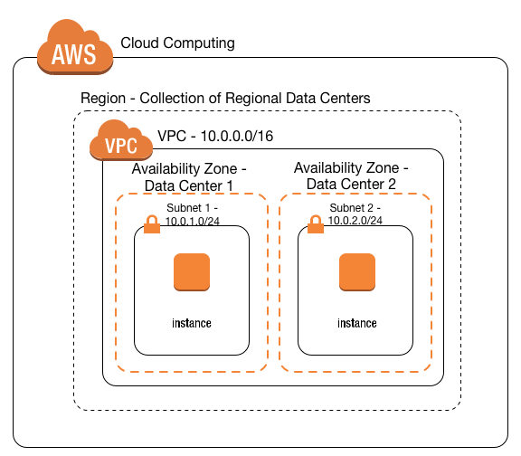

SpaaS with Ansible

Deploying Splunk (Splunk as a Service), Snort and Cowrie with Ansible
Splunk Deployment on EC2 with Ansible

Availabilty Zones and Regions
Splunk Sources Onborading

[source::tcp:1514]
SHOULD_LINEMERGE=true
BREAK_ONLY_BEFORE = \[\*\*\] \[\d+\:\d+\:\d+\]
TIME_PREFIX = (?=\d+/\d+)
TIME_FORMAT = %m/%d-%T.%6N